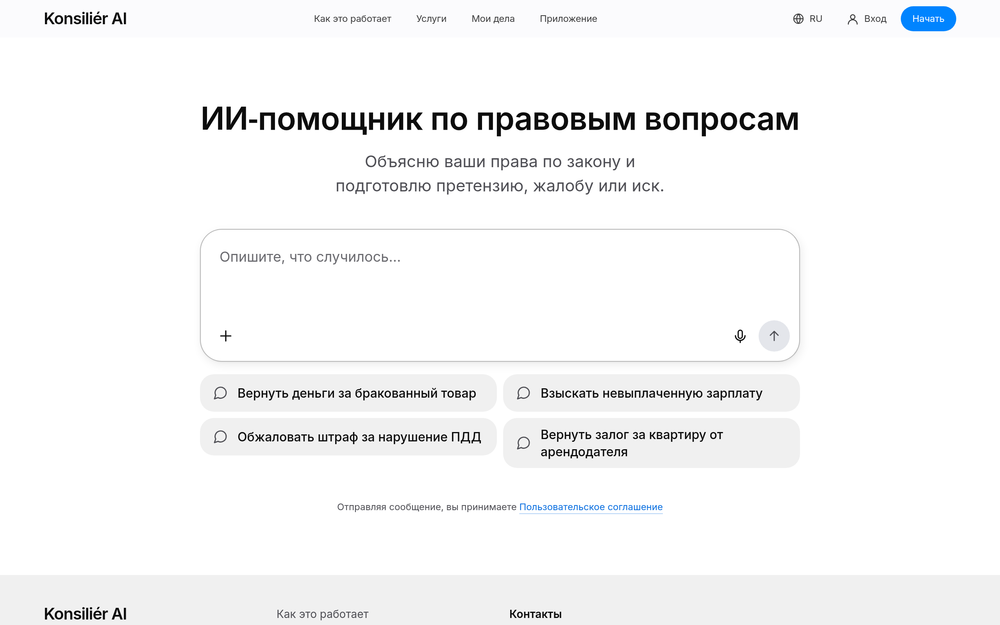
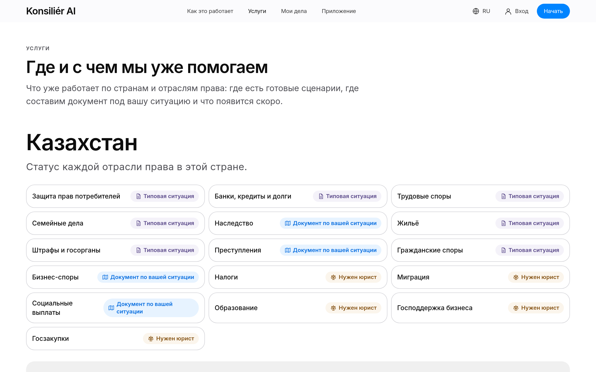
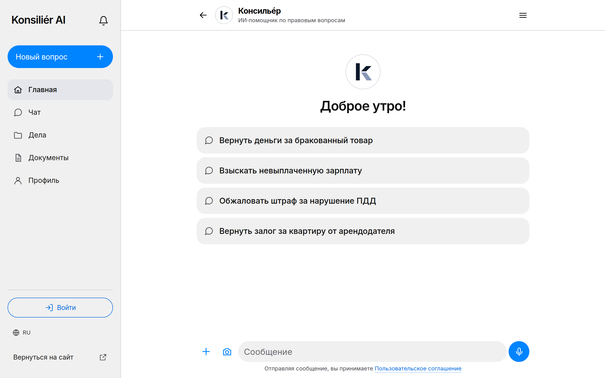
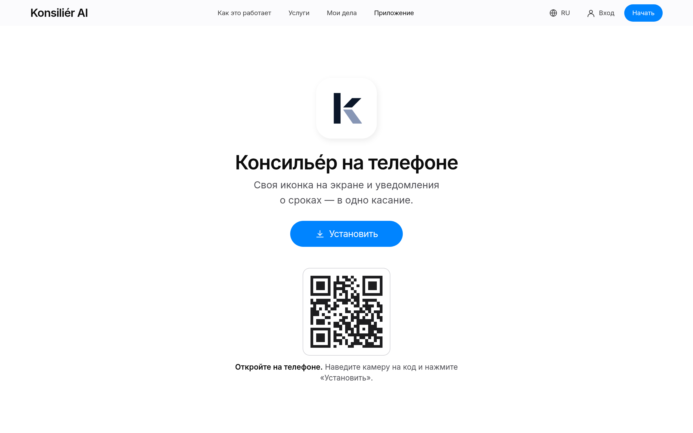

Магазин отказывается вернуть деньги.
Работодатель задерживает или не платит.
Мошенники оформили кредит на чужие документы.
Водитель считает штраф неправильным.
ИИ-помощник по бытовым юридическим вопросам. Объясняет, готовит документ и напоминает о сроках; результат не обещает.
Бесплатный чат на русском или казахском.
Нормы — только после открытия официального текста.
adilet.zan.kzСервис готовит документ.
Куда подать и напоминания о сроках.




Чат с ИИ-помощником, дневной лимит сообщений.
Фиксированная цена во всех 20 сценариях. Документ создаётся после оплаты.
Все документы одного дела одной покупкой.
Мы только начали. Платящих клиентов пока нет.
ТОО «Konsilier AI», зарегистрировано 29.09.2026, Алматы · БИН 260940036818
Внешних инвестиций: нет
Каждая роль отчитывается основателям дважды в день. Основатели утверждают каждый расход, публикацию и исходящее сообщение.
Облачные кредиты, чтобы проверить открытые модели на GPU NVIDIA для трёх шагов: обезличивание данных на русском и казахском, выбор сценария, поиск норм. Обучение DLI для команды.
Кредиты на Gemini: чат работает на бесплатном уровне Gemini, и это ограничивает число пользователей.
Кредиты на Claude в Amazon Bedrock (наш слой провайдеров уже его поддерживает). Сейчас документы на Claude ограничены $3 в день.